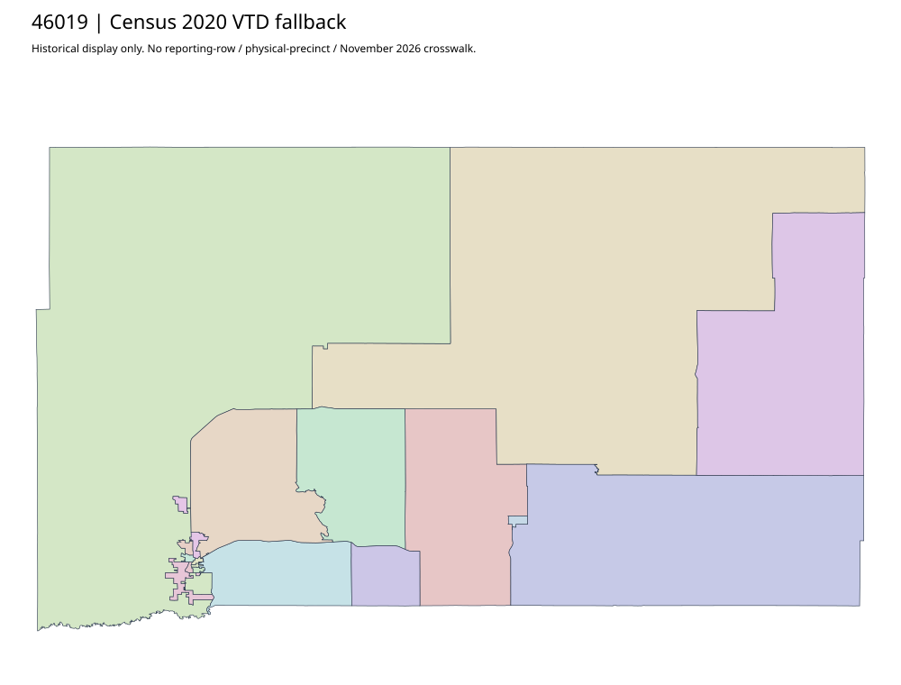

304 ordered indexButte | 46019
Official county/elections/auditor pages acquired through observed redirects to buttesd.gov. Several voting/map controls are javascript placeholders rather than document links. No actual precinct geometry original established; complete Census2020 fallback retained without treating labels as joins.
3 priority / 18 full historical observations. Parent is a summary ancestor, not additive to leaves. No physical feature matches or current reporting crosswalk approved.
Acquired shared-parent assets
No complete county precinct-map original acquired from this bounded chain. Use qualified fallback; roster/landing/error bodies are retained as evidence.
Census2020 fallback
18 native historical VTD features. Entire785-feature ZIP original retained once, all66 counties. Yankton has one countywide VTD. No current/reporting allocation. complete original gzip

Full binary/attribute/geometry QA
Observed authority/acquisition routes
Complete SOS authority fields including original blank/masked values: parent inventory. No contacts were sent.
Ordered full children
- Precinct-16 | 844 source votes | priority
- Precinct-25 | 477 source votes | priority
- Precinct-17 | 457 source votes | priority
- Precinct-28 | 448 source votes | remainder
- Precinct-24 | 388 source votes | remainder
- Precinct-26 | 298 source votes | remainder
- Precinct-14 | 281 source votes | remainder
- Precinct-21 | 279 source votes | remainder
- Precinct-23 | 258 source votes | remainder
- Precinct-27 | 254 source votes | remainder
- Precinct-13 | 250 source votes | remainder
- Precinct-20 | 236 source votes | remainder
- Precinct-22 | 224 source votes | remainder
- Precinct-18 | 127 source votes | remainder
- Precinct-11 | 93 source votes | remainder
- Precinct-12 | 92 source votes | remainder
- Precinct-06 | 47 source votes | remainder
- Precinct-08 | 28 source votes | remainder